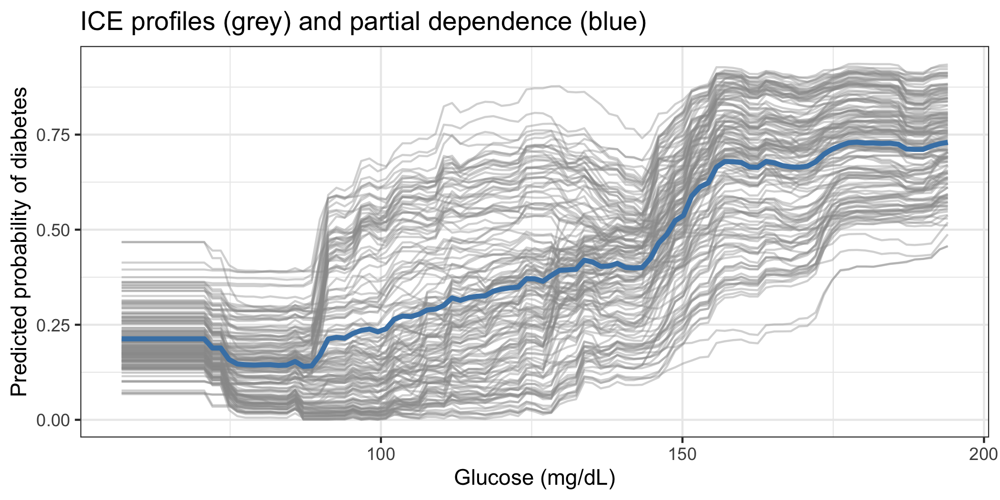
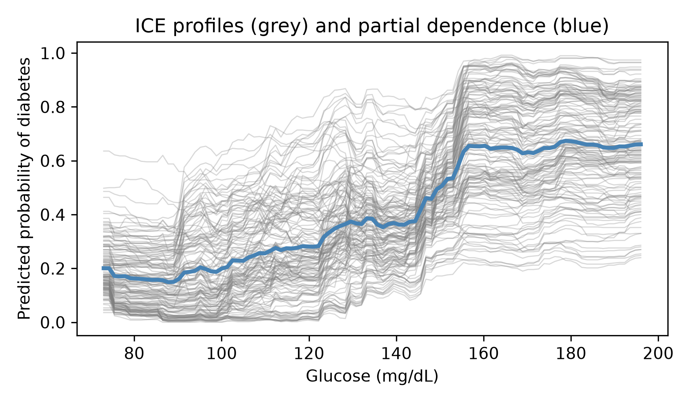

# Packages for this exercise. If one is missing, remove the # and run this line once:
# install.packages(c("tidyverse", "tidymodels", "DALEX", "DALEXtra", "ranger"))
library(tidyverse)
library(tidymodels)
library(DALEX) # explanations for any model
library(DALEXtra) # connects DALEX to tidymodels
theme_set(theme_bw()) # white background for every plot
options(pillar.sigfig = 3) # show three significant figures in tablesExercise 9.3 — One toolbox for explanations: DALEX
Exercises 9.1 and 9.2 used a different package for each explanation. The DALEX package puts them behind one interface. You wrap the fitted model once in an explainer, then ask the explainer each question. The package exists in R (with DALEXtra for tidymodels) and in Python (dalex), with the same function names.
NoteThe plots are for looking at
The code for every plot is folded away just above it, in case you are curious, and all of it is in the notebook linked at the top of each tab. You are not expected to write it yourself.
Download this exercise as an R Markdown notebook (.Rmd): the text and every code cell of the R version, including the code for the plots, with the blanks left for you to fill in. Open it in RStudio and run it a chunk at a time.
Packages and data
The data are the 750 people in data/diabetes_clean.csv, as in Exercises 9.1 and 9.2. The outcome is diabetes (neg or pos); the predictors are pregnant, glucose, mass, pedigree and age, in their own units. As always, 80% of the people are used for training and 20% are held back as the test set.
diabetes <- read_csv("data/diabetes_clean.csv") |>
select(pregnant, glucose, mass, pedigree, age, diabetes) |>
mutate(diabetes = factor(diabetes, levels = c("neg", "pos")))
set.seed(42)
split <- initial_split(diabetes, prop = 0.8)
train <- training(split)
test <- testing(split)Part 1 — The model and the explainer
The black box is the random forest of Exercises 9.1 and 9.2. Fit it on the training rows:
rf_spec <- rand_forest(trees = 500) |>
set_engine("ranger", importance = "impurity") |>
set_mode("classification")
set.seed(1)
rf_fit <- rf_spec |>
fit(diabetes ~ ., data = train)Evaluate it once on the test set:
test_preds <- test |>
bind_cols(predict(rf_fit, new_data = test, type = "prob"),
predict(rf_fit, new_data = test))
test_preds |> accuracy(truth = diabetes, estimate = .pred_class)#> # A tibble: 1 × 3
#> .metric .estimator .estimate
#> <chr> <chr> <dbl>
#> 1 accuracy binary 0.72test_preds |> roc_auc(truth = diabetes, .pred_pos, event_level = "second")#> # A tibble: 1 × 3
#> .metric .estimator .estimate
#> <chr> <chr> <dbl>
#> 1 roc_auc binary 0.753Accuracy 0.720 and AUC 0.753 on the 150 test patients.
Now wrap the model in an explainer. explain_tidymodels() needs the model, the predictors of the people to explain it on (the test patients), and the true outcome y as numbers, 1 for diabetes and 0 for none.
# Replace every ______ below, then run this cell.
explainer <- explain_tidymodels(
rf_fit,
data = test |> select(-diabetes),
y = as.numeric(test$diabetes == ______), # 1 = diabetes, 0 = none
label = "Random forest",
verbose = FALSE # no progress report
)
TipStuck?
y must be 1 for the people with diabetes. Which level of diabetes is that? as.numeric(test$diabetes) on its own would give 1 and 2 (the positions of the levels), and every explanation would then be wrong.
A quick check that the explainer is set up right: its AUC should be the one you just computed.
model_performance(explainer)$measures |> as.data.frame()#> recall precision f1 accuracy auc
#> 1 0.6181818 0.6181818 0.6181818 0.72 0.7525359It is, 0.753.
Part 2 — Which variables matter?
model_parts() is the permutation importance of Exercise 9.1: shuffle one variable in the test set, see how much worse the model gets, repeat 10 times and average. DALEX measures “worse” as \(1 - \text{AUC}\), so a larger number is a worse model. _full_model_ is the value with nothing shuffled.
set.seed(1)
importance_dalex <- model_parts(explainer)
importance_dalex |>
as.data.frame() |>
filter(permutation == 0) |> # permutation 0 is the average of the 10 shuffles
select(variable, dropout_loss)#> variable dropout_loss
#> 1 _full_model_ 0.2474641
#> 2 pregnant 0.2481148
#> 3 age 0.2547177
#> 4 pedigree 0.2586411
#> 5 mass 0.2800574
#> 6 glucose 0.3796555
#> 7 _baseline_ 0.4769761With nothing shuffled the loss is 0.247. Shuffling glucose raises it to 0.380; shuffling any other variable raises it by 0.033 at most (BMI). Glucose is by far the most important variable, as in Exercise 9.1, and here it took one line of code.
Part 3 — How does the prediction change with glucose?
An importance says how much a variable matters, not how. For one patient, set her glucose to 57, then a little higher, and so on up to 194, keep everything else about her as it is, and predict each time. The curve you get is her ICE profile (individual conditional expectation). The average of the 150 ICE profiles is the partial dependence profile: what the model predicts, on average, at each glucose level. model_profile() computes both.
# Replace every ______ below, then run this cell.
pdp_glucose <- model_profile(explainer, variables = ______, type = "partial",
N = NULL, # use all 150 patients
variable_splits_type = "uniform") # an evenly spaced grid
TipStuck?
Give the name of the variable as a string, in quotes.
Code for this plot (optional)
pdp_glucose$cp_profiles |>
as.data.frame() |>
ggplot(aes(x = glucose, y = `_yhat_`, group = `_ids_`)) +
geom_line(colour = "grey60", alpha = 0.4) +
geom_line(data = pdp_glucose$agr_profiles,
aes(x = `_x_`, y = `_yhat_`, group = NULL),
colour = "steelblue", linewidth = 1.2) +
labs(x = "Glucose (mg/dL)", y = "Predicted probability of diabetes",
title = "ICE profiles (grey) and partial dependence (blue)")
Question! Describe the blue curve in words. Do all the grey curves have the same shape?
Below a glucose of about 100 the average prediction stays low, between 0.14 and 0.24. It climbs gradually to about 0.40 at 140, rises steeply between 145 and 157 to about 0.68, and stays between 0.66 and 0.73 above that. The steps come from the forest’s splits. Every grey curve ends higher than it starts, but they start at different heights (from 0.07 to 0.47) and rise by very different amounts (from 0.15 to 0.75). How much glucose matters depends on a patient’s other values; the average curve hides that.
Part 4 — One patient
predict_parts() explains one prediction. Take the first test patient:
new_observation <- test |>
slice(1) |>
select(-diabetes)
new_observation#> # A tibble: 1 × 5
#> pregnant glucose mass pedigree age
#> <dbl> <dbl> <dbl> <dbl> <dbl>
#> 1 0 194 28.5 0.24 28predict(explainer, new_observation) # her predicted probability#> pos
#> 0.7058381Ask for her SHAP values, as in Exercise 9.2. DALEX estimates them from 25 random orders of the variables, with the test patients as the background.
# Replace every ______ below, then run this cell.
set.seed(1)
shap_patient <- predict_parts(explainer, new_observation = new_observation,
type = ______, B = 25)
shap_patient |>
as.data.frame() |>
filter(B == 0) |> # B = 0 holds the average of the 25 orders
select(variable, contribution) |>
arrange(desc(abs(contribution)))
TipStuck?
The type is a string, the name of the method in lower case. See ?predict_parts.
She is 28, with a glucose of 194, and the forest gives her 0.706. The average prediction over the test patients is 0.379. Her glucose adds +0.361; each of the other four variables moves it by 0.04 or less. As in Exercise 9.2, the contributions add up from the average to her prediction. With type = "break_down" DALEX adds the variables in one fixed order instead of averaging over many.
TipKey points
- Wrap the fitted model once in an explainer, with the test patients and
ycoded 1 for diabetes and 0 for none. Every explanation is then one function call. model_parts()is the permutation importance of Exercise 9.1: glucose matters most.model_profile()gives the partial dependence profile (the average) and the ICE profiles (one per patient) for one variable. Read both: the average can hide patients who differ.predict_parts()explains one patient, with SHAP values as in Exercise 9.2.
Download this exercise as a Jupyter notebook (.ipynb): the text and every code cell of the Python version, including the code for the plots, with the blanks left for you to fill in. Open it in Jupyter or VS Code and run it a cell at a time.
Packages and data
# Packages for this exercise. If one is missing, install it once from a terminal
# (in a Jupyter notebook, type %pip instead of pip):
# pip install pandas numpy matplotlib scikit-learn "dalex>=1.8"
import pandas as pd
import numpy as np
import matplotlib.pyplot as plt
import dalex as dx # explanations for any model
from sklearn.ensemble import RandomForestClassifier
from sklearn.model_selection import train_test_split
from sklearn.metrics import accuracy_score, roc_auc_scoreThe data are the 750 people in data/diabetes_clean.csv, as in Exercises 9.1 and 9.2. The outcome is diabetes, coded 1 for pos and 0 for neg; the predictors are pregnant, glucose, mass, pedigree and age, in their own units. As always, 80% of the people are used for training and 20% are held back as the test set.
diabetes = pd.read_csv("data/diabetes_clean.csv")
diabetes = diabetes[["pregnant", "glucose", "mass", "pedigree", "age", "diabetes"]]
diabetes["diabetes"] = (diabetes["diabetes"] == "pos").astype(int) # 1 = pos, 0 = neg
predictors = ["pregnant", "glucose", "mass", "pedigree", "age"]
train, test = train_test_split(diabetes, test_size=0.2, random_state=42)Part 1 — The model and the explainer
The black box is the random forest of Exercises 9.1 and 9.2. Fit it on the training rows:
rf = RandomForestClassifier(n_estimators=500, random_state=1)
rf = rf.fit(train[predictors], train["diabetes"])Evaluate it once on the test set:
test_class = rf.predict(test[predictors]) # predicted class, threshold 0.5
test_prob = rf.predict_proba(test[predictors])[:, 1] # probability of diabetes
print("accuracy:", round(accuracy_score(test["diabetes"], test_class), 3))#> accuracy: 0.713print("AUC: ", round(roc_auc_score(test["diabetes"], test_prob), 3))#> AUC: 0.794Accuracy 0.713 and AUC 0.794 on the 150 test patients.
Now wrap the model in an explainer. dx.Explainer() needs the model, the predictors of the people to explain it on (the test patients), and the true outcome y as numbers, 1 for diabetes and 0 for none.
# Replace every ______ below, then run this cell.
explainer = dx.Explainer(
rf,
data=test[______],
y=test["diabetes"], # already 1 = diabetes, 0 = none
label="Random forest",
verbose=False, # no progress report
)
TipStuck?
data is the table of predictors only, without the outcome column: the same columns the forest was fitted on.
A quick check that the explainer is set up right: its AUC should be the one you just computed.
explainer.model_performance().result.round(3)#> recall precision f1 accuracy auc
#> Random forest 0.474 0.675 0.557 0.713 0.794It is, 0.794.
Part 2 — Which variables matter?
model_parts() is the permutation importance of Exercise 9.1: shuffle one variable in the test set, see how much worse the model gets, repeat 10 times and average. DALEX measures “worse” as \(1 - \text{AUC}\), so a larger number is a worse model. _full_model_ is the value with nothing shuffled.
importance_dalex = explainer.model_parts(random_state=1)
importance_dalex.result[["variable", "dropout_loss"]].round(3)#> variable dropout_loss
#> 0 pedigree 0.205
#> 1 _full_model_ 0.206
#> 2 pregnant 0.218
#> 3 mass 0.234
#> 4 age 0.242
#> 5 glucose 0.352
#> 6 _baseline_ 0.517With nothing shuffled the loss is 0.206. Shuffling glucose raises it to 0.352; shuffling any other variable raises it by 0.036 at most (age), and shuffling pedigree changes it by less than 0.001. Glucose is by far the most important variable, as in Exercise 9.1, and here it took one line of code.
Part 3 — How does the prediction change with glucose?
An importance says how much a variable matters, not how. For one patient, set her glucose to 73, then a little higher, and so on up to 196, keep everything else about her as it is, and predict each time. The curve you get is her ICE profile (individual conditional expectation). The average of the 150 ICE profiles is the partial dependence profile: what the model predicts, on average, at each glucose level. model_profile() computes both.
# Replace every ______ below, then run this cell.
pdp_glucose = explainer.model_profile(variables=[______], type="partial",
verbose=False)
TipStuck?
Give the name of the variable as a string, in quotes, inside the list.
Code for this plot (optional)
ice = pdp_glucose.raw_profiles.result
fig, ax = plt.subplots(figsize=(6, 3.5))
for patient_id in ice["_ids_"].unique():
one = ice[ice["_ids_"] == patient_id]
ax.plot(one["glucose"], one["_yhat_"], color="grey", alpha=0.3, linewidth=0.7)
ax.plot(pdp_glucose.result["_x_"], pdp_glucose.result["_yhat_"], color="steelblue", linewidth=2.5)
ax.set_xlabel("Glucose (mg/dL)")
ax.set_ylabel("Predicted probability of diabetes")
ax.set_title("ICE profiles (grey) and partial dependence (blue)")
fig.tight_layout()
plt.show()
Question! Describe the blue curve in words. Do all the grey curves have the same shape?
Below a glucose of about 100 the average prediction stays low, between 0.15 and 0.20. It climbs gradually to about 0.37 at 140, rises steeply between 145 and 157 to about 0.66, and stays between 0.63 and 0.67 above that. The steps come from the forest’s splits. Every grey curve ends higher than it starts, but they start at different heights (from 0.04 to 0.64) and rise by very different amounts (from 0.08 to 0.85). How much glucose matters depends on a patient’s other values; the average curve hides that.
Part 4 — One patient
predict_parts() explains one prediction. Take the first test patient:
new_observation = test[predictors].iloc[[0]]
print(new_observation)#> pregnant glucose mass pedigree age
#> 506 6 115 28.8 0.368 35print(explainer.predict(new_observation)) # her predicted probability#> [0.276]Ask for her SHAP values, as in Exercise 9.2. DALEX estimates them from 25 random orders of the variables, with the test patients as the background.
# Replace every ______ below, then run this cell.
shap_patient = explainer.predict_parts(new_observation, type=______, B=25,
random_state=1)
shap_average = shap_patient.result[shap_patient.result["B"] == 0] # B = 0 holds the average of the 25 orders
shap_average = shap_average[["variable", "contribution"]]
shap_average.sort_values("contribution", key=abs, ascending=False).round(3)
TipStuck?
The type is a string, the name of the method in lower case. See help(explainer.predict_parts).
This split puts a different person first than the R split does. She is 35, with a glucose of 115, and the forest gives her 0.276. The average prediction over the test patients is 0.356. Her glucose pulls the prediction down by 0.144; each of the other four variables moves it by 0.036 or less. As in Exercise 9.2, the contributions add up from the average to her prediction. With type="break_down" DALEX adds the variables in one fixed order instead of averaging over many.
TipKey points
- Wrap the fitted model once in an explainer, with the test patients and
ycoded 1 for diabetes and 0 for none. Every explanation is then one function call. model_parts()is the permutation importance of Exercise 9.1: glucose matters most.model_profile()gives the partial dependence profile (the average) and the ICE profiles (one per patient) for one variable. Read both: the average can hide patients who differ.predict_parts()explains one patient, with SHAP values as in Exercise 9.2.